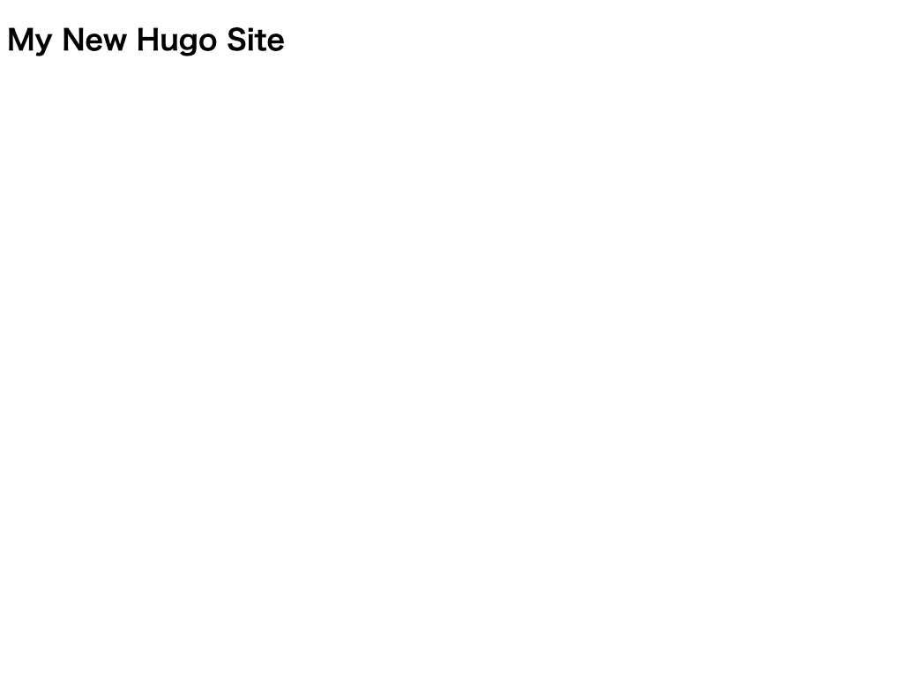
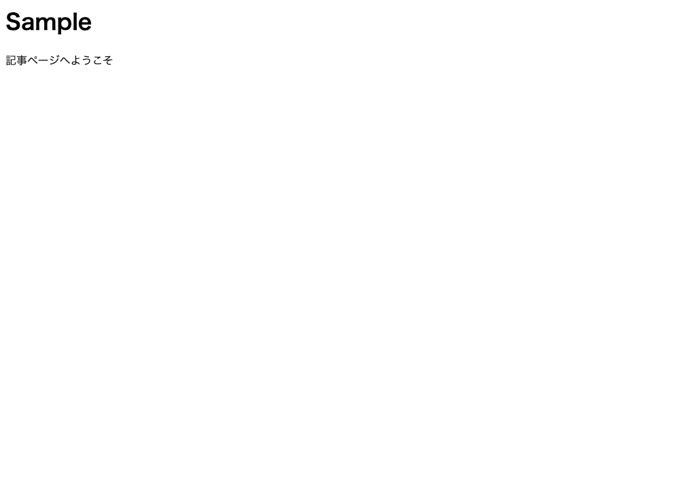
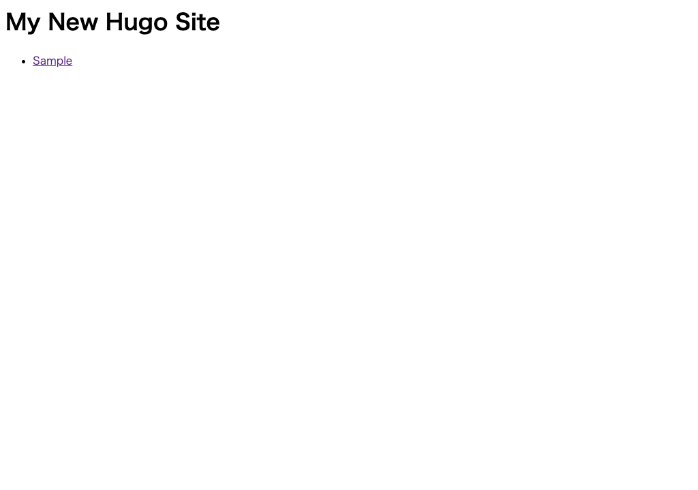

テーマテンプレートを作る¶
オリジナルのテーマテンプレートを作ります。
テーマの作成¶
-
コンソールで
/Hugo/Sites/theme_tutorialに移動します。1 2 3 4 5
# Windows の場合 $ cd /Hugo/Sites/theme_tutorial # mac の場合 $ cd ~/Sites/theme_tutorial
-
HUGO でテーマを作成するには、
hugo new theme テーマ名というコマンドを実行します。1
$ hugo new theme mytheme
-
「themes」ディレクトリの下に「mytheme」が作成されていれば OK です。
-
サンプルサイトで「mytheme」を使うように設定しましょう。次のコマンドで「theme_tutorial」をプロジェクトルートとして VSCode を開きます。
1 2
# /Hugo/Sites/theme_tutorial にいるはずなのでカレントディレクトリで開く $ code . -
config.tomlをエディタで開きます。 -
themeプロパティで作成した「mytheme」を指定します。1 2 3 4
baseURL = "http://example.org/" languageCode = "en-us" title = "サンプルサイト" theme = "mytheme"
トップのテンプレート作成¶
サイトのトップページ（ホームページ）にサイト名を表示してみましょう。
-
themes/mytheme/layouts/index.htmlをエディタで開きます。 -
見出しタグを記載します。
1
<h1>{{ .Site.Title }}</h1>
-
開発サーバを起動します。
1
$ hugo server
-
ブラウザで
http://localhost:1313へアクセスし、サイトを確認します。 次のように表示されていれば OK です。
記事ページのテンプレート作成¶
記事ページに記事のタイトルと本文を表示してみましょう。
-
themes/mytheme/layouts/_default/single.htmlをエディタで開きます。 -
次の内容を記載します。
1 2
<h1>{{ .Title }}</h1> {{ .Content }}
-
このままだと表示対象のコンテンツファイルがないので、コンテンツファイルを作成します。「content」ディレクトリ以下に「sample.md」が作成されます。
1
$ hugo new sample.md
-
「sample.md」を開きます。次のように編集して、ファイルを保存します。
1 2 3 4 5 6 7
--- title: "Sample" date: 2019-11-18T11:50:00+9:00 draft: false --- 記事ページへようこそ
-
ブラウザで
http://localhost:1313/sample/へアクセスし、サイトを確認します。 次のように表示されていれば OK です。
トップページに一覧を表示¶
トップページに記事一覧を表示してみましょう。
mytheme/layouts/index.htmlをエディタで開きます。-
トップのテンプレート作成 で編集した内容に、以下の
<ul>〜</ul>部分を追記します。1 2 3 4 5 6
<h1>{{ .Site.Title }}</h1> <ul> {{ range .Site.RegularPages }} <li><a href="{{ .RelPermalink }}">{{ .Title }}</a></li> {{ end }} </ul>
-
ブラウザで
http://localhost:1313/へアクセスし、サイトを確認します。 次のように表示されていれば OK です。